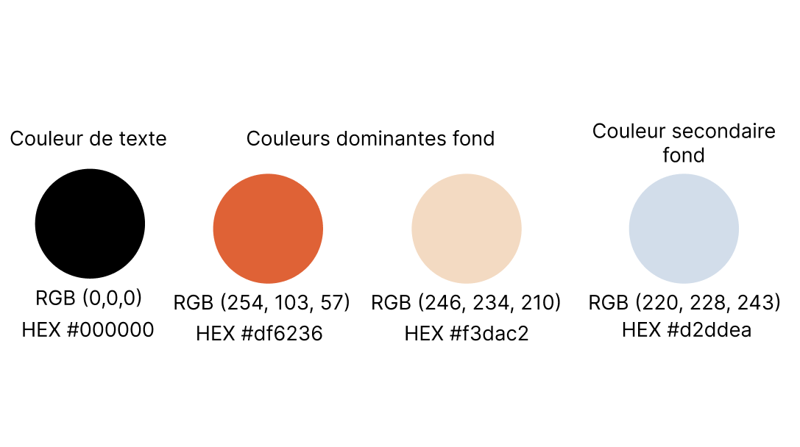
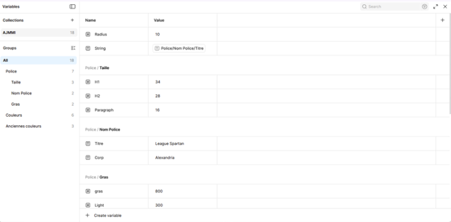
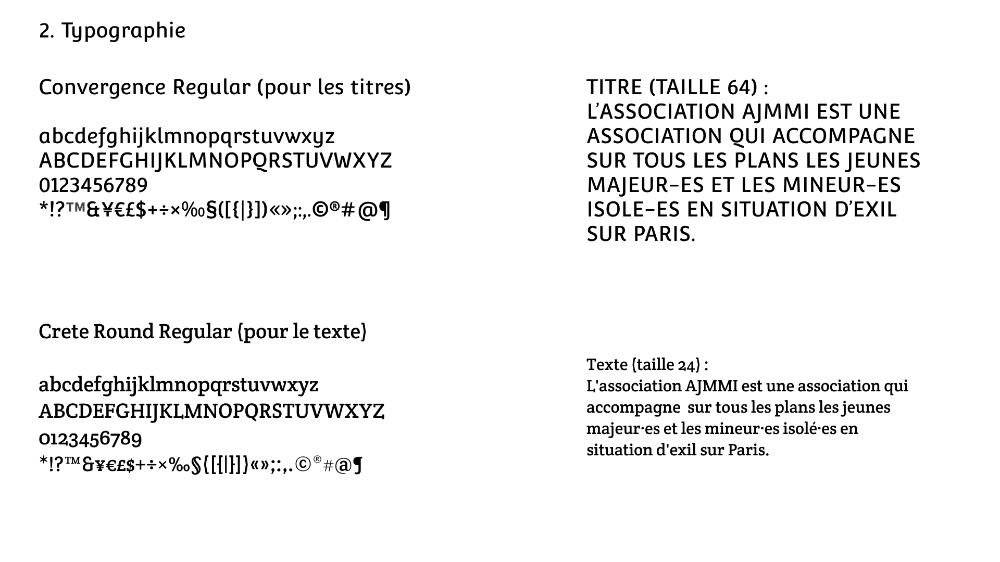
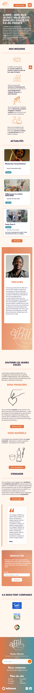

Concevoir un design system et produire les éléments visuels, graphiques ou sonores
Design system établi lors de la conception des maquettes du site de l'AJMMI (SAE 5.01)
Cette réalisation présente les principaux éléments graphiques définis pour assurer une identité visuelle cohérente : palette de couleurs, typographies, variables Figma et maquette finale de l’interface.

Palette de couleurs
Cette palette chromatique a été conçue dans le cadre de la SAE 5.01 pour l'association AJMMI. Elle constitue l'une des bases du design system et permet d'assurer une cohérence visuelle sur l'ensemble des supports numériques.

Variables Figma
L'utilisation des variables Figma a permis de centraliser les tailles de texte, les polices, les couleurs et les rayons de bordure afin de faciliter la maintenance du projet et garantir la cohérence graphique.

Typographie
La définition d'une hiérarchie typographique claire permet d'assurer une meilleure lisibilité et une cohérence entre les différents écrans de l'interface.
Application du design system
L'ensemble des éléments précédemment définis (palette chromatique, variables Figma et hiérarchie typographique) ont été appliqués à la conception de la maquette mobile du site AJMMI.
